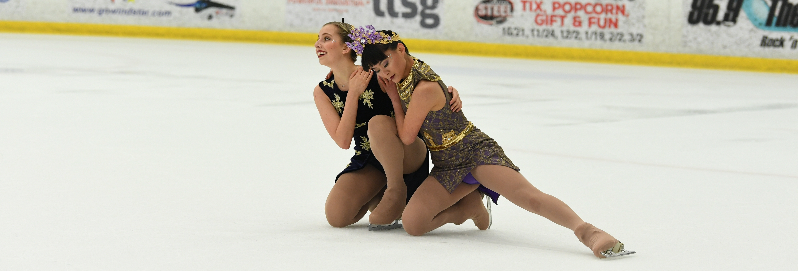

home

hello!
Hi! I'm Chelsey Wang, a rising third year engineering student at UCLA majoring in Computer Science. I'm always excited to start on new CS projects and brainstorm fun ideas! Currently, I am on the SWE Dev Team, and interning at Northrop Grumman for the summer.
projects / activities
--summer 2020--
northrop grumman - software engineering intern
I have learned a lot about how agile methodology is used in the workplace, the importance of good company culture (the people I've interacted with have been amazing!), and how to collaborate with others as well as pair program.
On the technical side, I've learned how to break down and deal with a giant codebase, and write multithreaded interprocess communication programs, as well as test them and write scripts.
It has been super exciting and rewarding to be able to utilize all the concepts I've learned in school to what I've been working on, as well as seeing how all these concepts are actually used in real life and how they intertwine together!
--spring 2020--
networks - coursework - C
Implemented Go-Back-N protocol to handle packet loss over UDP. We simulated packet loss by using the tc command on a Linux VM.
Click here for some of my code.
--winter 2020--
partiic - frontend developer - react native
Partiic is an app that helps Bruins advertise and find parties by condensing it all into one platform! Parties can also be rated and tagged so Bruins can find the perfect party to attend. Through this project, I taught myself React Native and navigating within a React Native app, learned more about the interaction between frontend and backend, and met a wonderful, new group of people to work with.
society of women engineers - web dev team - react
By getting accepted to join the SWE web dev team, I met and am continually inspired by the most intelligent women at UCLA. I learned how to work with a large, established code base, utilize better coding practices, as well as different git conventions.
operating systems principles - coursework - C
one of the courses I took; we did C programs involving multiprocessing, multithreading, locks, server-client interactions, and hardware/sensor interactions. Click
here for specs. Click
here for some of my code.
lab 0: file redirection
lab 1a: puts keyboard in non-canonical, no-echo mode and uses syscalls to mimic standard behavior. creates a new process that execs a shell to run commands from keyboard on; utilizes polling to accept input from keyboard and shell.
lab 2a: multithreaded program that uses mutexes, spin locks, and compare-and-swap to update a global variable and a global linked list.
lab 2b: divides the linked list from lab2b into smaller sublists so the entire linked list can be accessed simultaneously by multiple threads.
lab 4b: utilizes a beaglebone and polling to read from a temperature sensor and output temperatures, while reading commands from stdin and a button.
lab 4c: incorporates lab4b to interact with commands over a tcp and tls server.
rss goes to broomball
rss goes ice skating
--fall 2019--
pinstagrad - frontend developer - react
Pinstagrad is an instagram and pinterest inspired web app catered specifically towards photographers by helping them upload and organize their photo inspirations. I gained extremely valuable experience with this project - the team dynamic of working on a web app together. I also learned a lot about react, coding practices and git from my fellow teammates and I am extremely thankful for this project and the people I worked with.
software construction laboratory - coursework - C, python, bash
yes, this is a course, but I have learned so much and gained so much experience during these fast ten weeks. Click
here for specs. Click
here for some of my code.
week 1: emacs (text editor)
week 2: shell scripting - one program extracts all hawaiian words; second program recursively searches through a given directory for files that are incorrectly named given a set of rules.
week 3: python argparse - re-create the shuf command
week 4: C program - defrobnicate, sort, frobnicate, then outputs frobnicated input.
week 5: C program - builds on previous assignment; but utilizes more syscalls and now works for input that is altered mid-run.
week 6: makefile
week 7: git
week 8: ssh
week 9: python - within a repo, this program will topologically sort and output all commits.
--spring 2019--
bruin racing - supermileage vehicle - ev rebuild team
I worked in a team of four to redesign the electrical+powertrain system. We tried to salvage old parts from the old car, but we also ordered new parts. We then assembled our new design onto the firewall. Through this project, I gained experience with schematics, soldering, and arduinos.
kalah - mancala, basically - C++
This project was coding mancala, and it used data structures, inheritance, and recursion. The player would enter the number of the hole they would like to move their beans to, and then the AI player would make a move. We had to code an "easy AI player" and a "difficult AI player" that the player would play against.
decoder - C++
This project utilized hashtables, vectors, and strong organizational skills. Basically, when given two files, one an altered version of the other, the program would create a text file that would have the shortest set of instructions that recorded how to best create the second, altered file. The instructions were either to copy a specific set of characters from the original file, or add characters the original file did not have. It also had a function that would interpret the instruction file and use it to create the second, altered file (testnew.txt). This project was tricky because of the hashtable limitation, and because there were size and time limits -- the instruction file (testdiff.txt) needed to be the shortest version possible, and the program had to run under a specified time.
dzknow website - HTML, CSS
I started learning web design over the summer as a break from my summer classes, and here is one of the websites I made as practice, with DZKnow's approval.